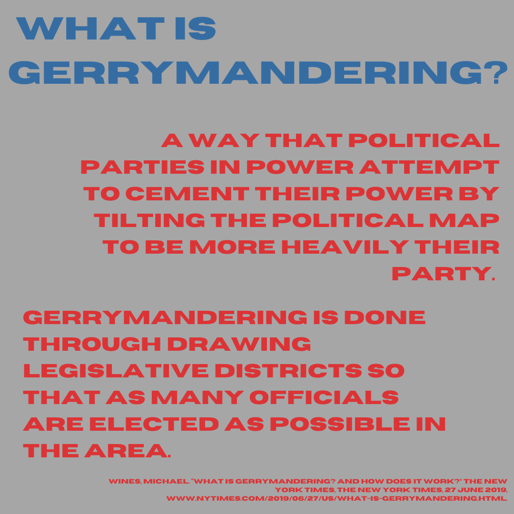
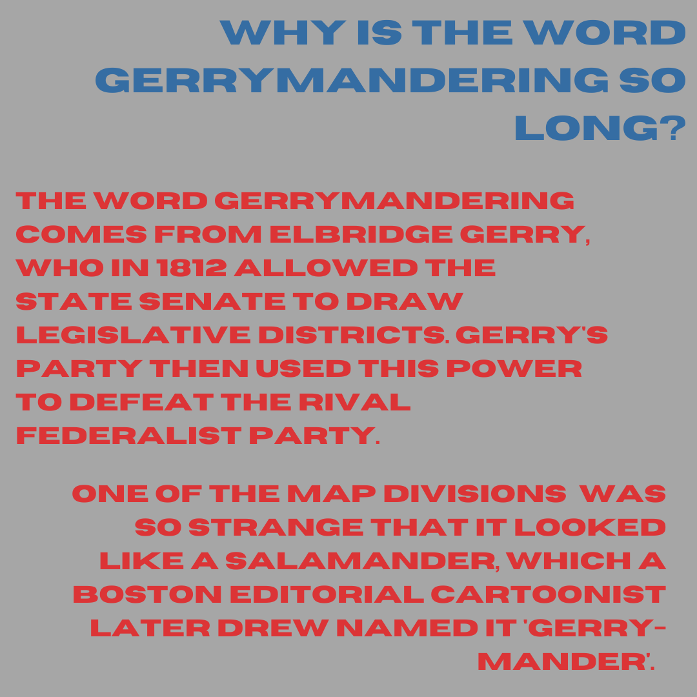
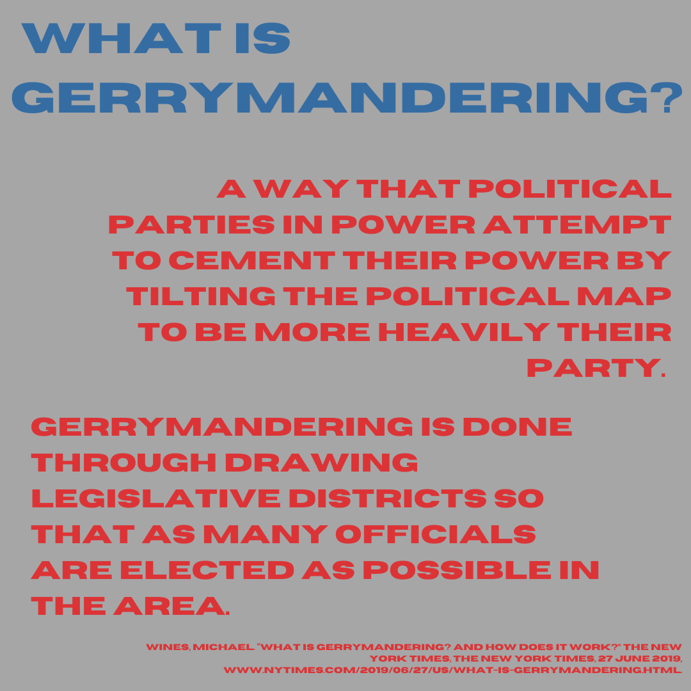
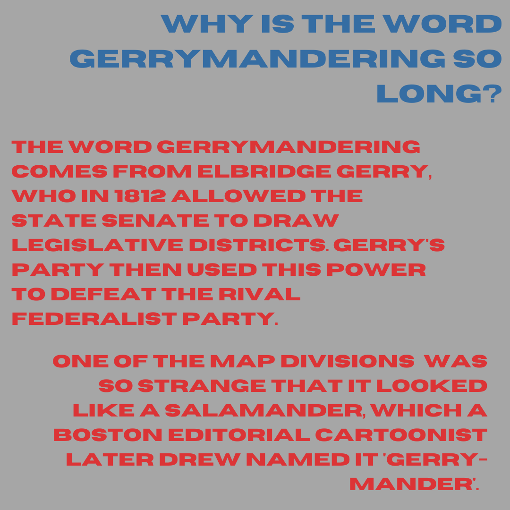

a way that political parties in power attempt to cement their power by tilting the political map to be more heavily their party. gerrymandering is done through drawing legislative districts so that as many officials are elected as possible in the area.
the word gerrymandering comes from elbridge gerry, who in 1812 allowed the state senate to draw legislative districts. gerry's party then used this power to defeat the rival federalist party. one of the map divisions was so strange that it looked like a salamander, which a boston editorial cartoonist later drew named it 'gerry-mander'.
a district drawn to fit as many people who vote in the opponent party as possible or 'packing' them all into a single district. the remaining districts then receive less voting power from the opponent party, making it easier to win more races in more districts with a more spread out opponent.
a map drawn to split up clusters of opponent party voters into different districts where they are outnumbered by the party gerrymandering. this is the opposite strategy to packing and when done efficiently each district holds enough party voters to allow the seat to be held safely by the gerrymandering party.
both parties have done a fair share of gerrymandering while in office. however, the majority of gerrymandering that exists on legislative maps right now is in favor of republicans. this is due to republicans holding more power after the 2010 census, when the maps were redrawn. whoever holds more power after the 2020 census will most likely have the benefit of the newly gerrymandered maps.
by race? no. by political party? for the time being. gerrymandering has been brought to the supreme court many times, but has been only struck down on the basis of race. The majority decision in the 5-4 case stated that they do not endorse partisan gerrymandering, but believe that the states should handle it. (this doesn't work very well to end gerrymandering as many of those officials are the ones gerrymandering).
here are some premade instagram infographics if you would like to share what you just learned with your following, or even just a few friends. if you post them on social media, please credit me!
 


